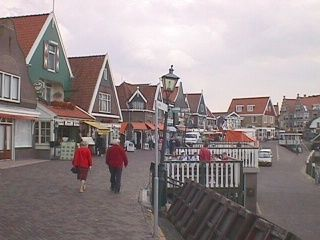
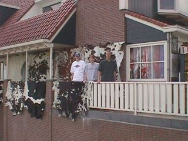
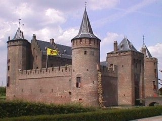
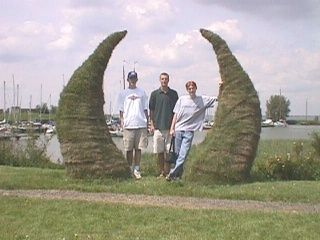
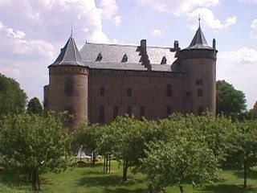
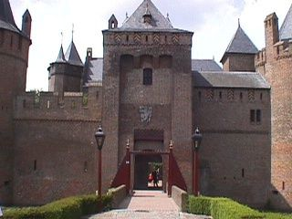
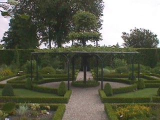
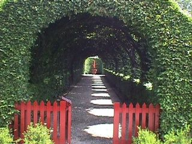

The following pictures were taken at Volendam. This used to be a fishing town on the sea, but the water was cut off and made into a lake. Now it is mostly a tourist trap.
Some nice boats in the port.
A view into the city.
Joe, Keith, and I in front of cow skins.
A nice shot of the castle as we're going in.
A full shot of the entire castle. This was probably the smallest castle we visited during our vacation.
Joe, me, and Keith standing between some weird structure that I believe is supposed to represent the Vikings. This shot was taken behind the castle.
A shot of the castle from the rear.
The front gate of the castle.
These next two are shots of a shrubbery in front of the castle.
 